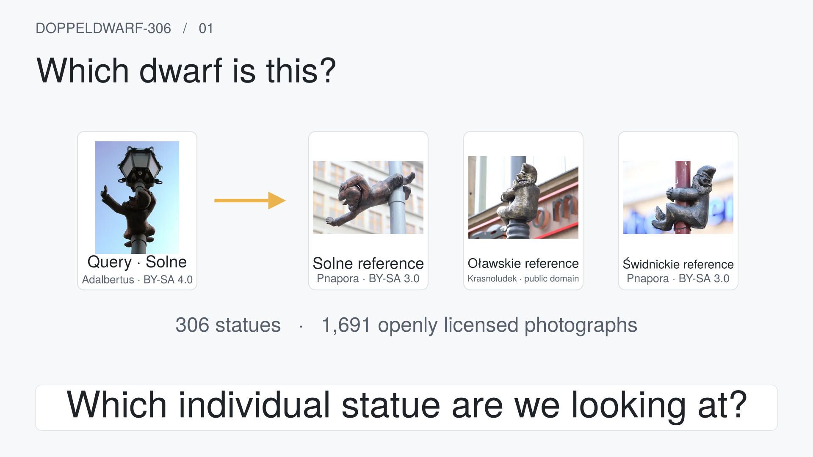
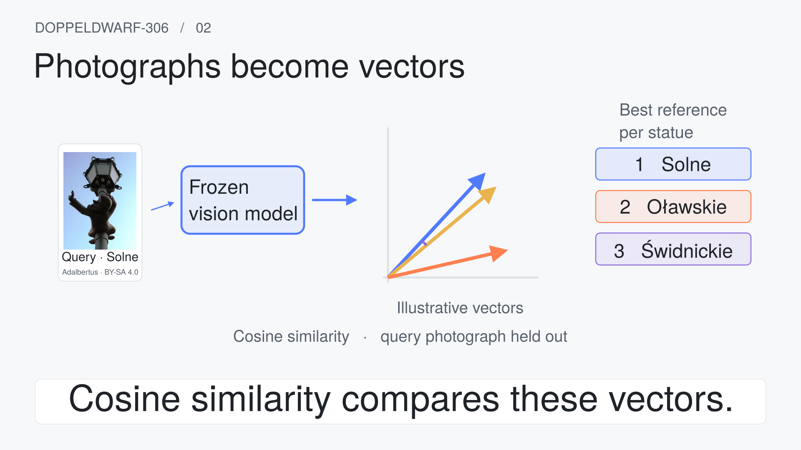
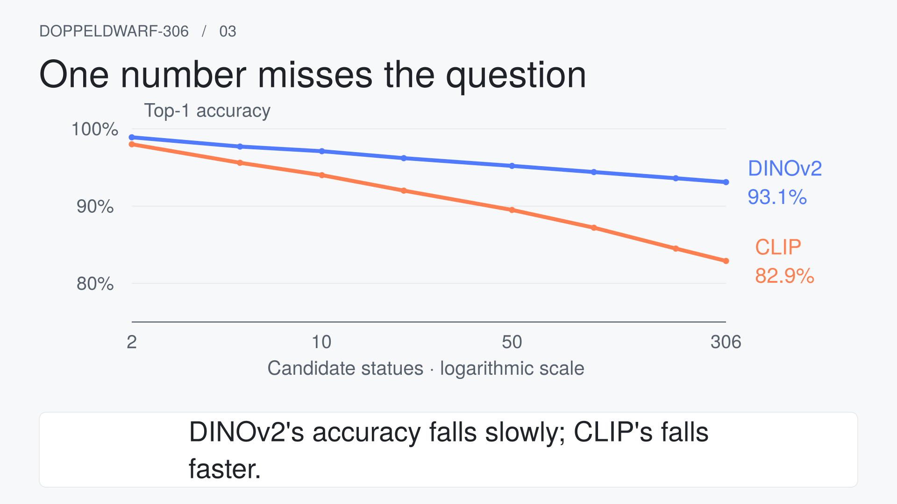
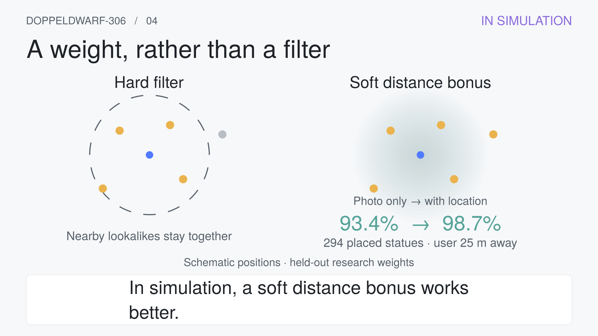
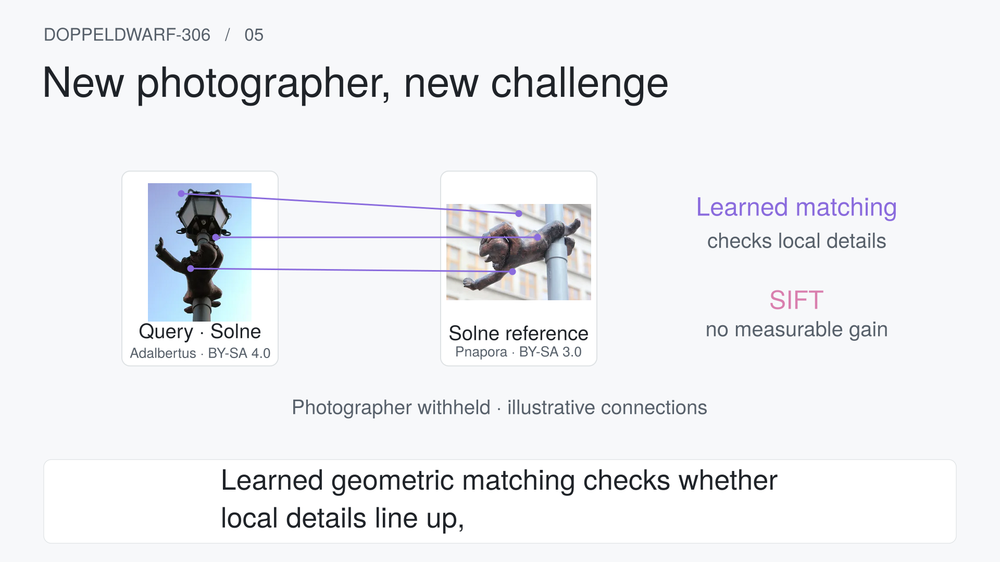
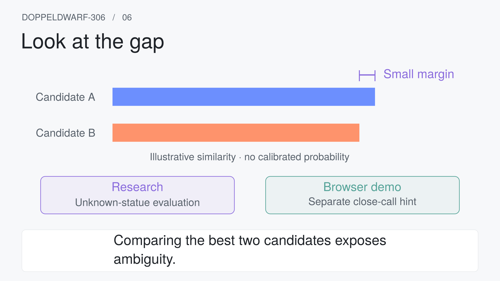
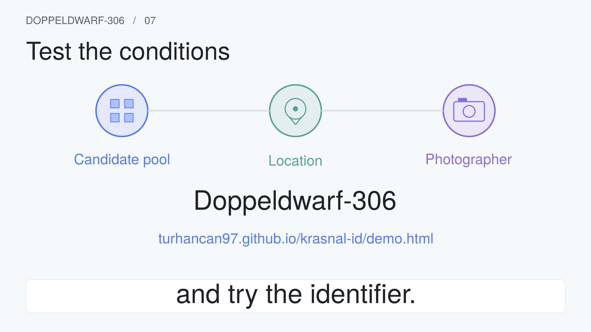
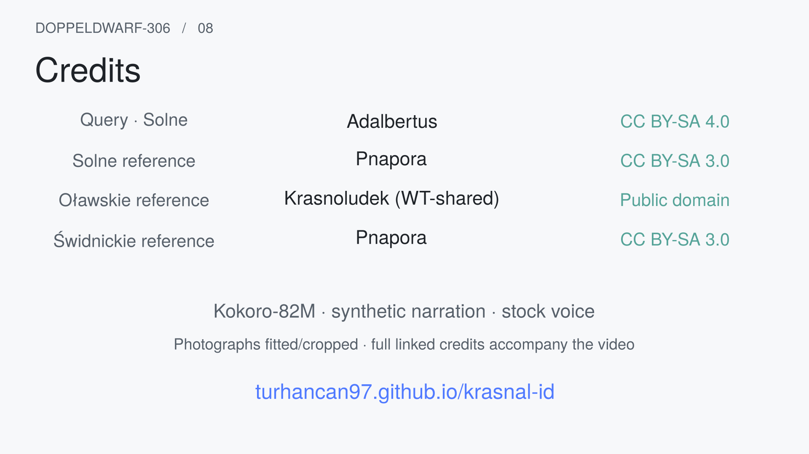

af_heart
American English · feminine
Download 15-second WAVA two-minute visual explanation of near-identical instance retrieval. Review the story, the voice and the motion before the complete render.
Draft · awaiting your reviewA short style study, using af_heart provisionally. Subtitles are burned into the picture. This is not the complete explainer.
Both clips use the same words and last 15 seconds. Listen for pace, clarity and the pronunciation of Wrocław and Doppeldwarf-306.
American English · feminine
Download 15-second WAVAmerican English · masculine
Download 15-second WAVWhich dwarf is this? Across Wrocław, many statues look alike. Doppeldwarf-306 compares their photographs using cosine similarity. Now add more candidates.
226 words. The timestamps allocate a maximum of two minutes, including eight seconds of credits; full narration timing comes after approval. Click any frame to inspect it at full size.

Across Wrocław, bronze dwarves share poses and props. Given a photograph, which individual statue are we looking at? Meet Doppeldwarf-306.
The existing teaser query appears on the left. Three pillar-dwarf references enter from the right; their shared silhouettes make the problem visible. Dataset counts appear below.
Transition: The query card shrinks into the input of the retrieval pipeline.

A frozen vision model turns each image into a vector: a numerical visual description. Cosine similarity compares these vectors. Similar directions suggest similar appearance; they do not prove identity. We rank each statue by its best reference photograph, without fine-tuning the model.
The query and reference photographs become coloured vectors. Two directions nearly align; a ranked list forms. The vector diagram is labelled illustrative. The query photograph is withheld from its references.
Transition: The ranked cards multiply into a candidate grid.

Now add more candidates. Do lookalikes overwhelm retrieval? Instead of reporting one accuracy number, we repeatedly sample larger candidate pools, always keeping the correct statue. DINOv2's accuracy falls slowly; CLIP's falls faster. The curve is the result.
A small pool grows while the measured DINOv2 and CLIP curves draw left to right. The horizontal axis uses log-scaled candidate counts; observed points stay visible.
Transition: Candidate dots rearrange into a schematic neighbourhood.
2. The headline result: accuracy against candidate-pool size

Surely location solves this? But nearby lookalikes survive a hard geographic filter. In simulation, a soft distance bonus works better. Across 294 placed statues, DINOv2 rises from 93.4 to 98.7 percent for users twenty-five metres away.
A hard neighbourhood boundary excludes a distant candidate but retains nearby lookalikes. It becomes a gradual distance bonus. Persistent labels: IN SIMULATION; 294 placed statues; user 25 m away; held-out weights.
Transition: The location halo fades; two photographs of the same statue take its place.

A new photographer brings different viewpoints, backgrounds, and lighting. Accuracy drops. Fewer remaining reference photographs also contribute to that drop. Learned geometric matching checks whether local details line up, improving the ranking. Classical SIFT adds no measurable gain in this comparison.
Two existing photographs show one statue from different viewpoints. Illustrative feature connections appear between them. A compact comparison distinguishes learned matching from SIFT; it is labelled photographer withheld.
Transition: The two image cards become the best two ranked candidates.
9. Is it recognising the statue, or the photographer?; 18. Internal reviews: sensitivity, scarcity and a multi-vector baseline · 16. The reviewer checks: what the explanations survive

Finally, high similarity need not mean a known statue. Comparing the best two candidates exposes ambiguity. This margin reduces false acceptance in the research; the browser demo uses a separately measured close-call hint.
Two schematic similarity bars almost tie; a bracket isolates their small margin. Labels distinguish research unknown-statue evaluation from the browser close-call hint. No made-up probabilities or measured cosine values appear.
Transition: The margin bracket opens into the end-card pipeline.

The lesson: test the pool, the place, and the photographer. Explore the dataset, and try the identifier.
Three labelled nodes reunite: candidate pool, location, photographer. The project lockup and the identifier address enter together.
Transition: Hold the project address while photograph and narration credits appear.

No narration. Hold credits for eight seconds.
Four compact photograph credits with author and licence, narration acknowledgement, and project address. Full linked source URLs accompany the downloadable video.
Transition: End on a still frame; no fade that shortens reading time.
#507AFFpink #D97FAEteal #55A398purple #8A6BDDmustard #EAB34Dorange #FF7F50green #34C759yellow #FFCC00Photographs retain their individual terms. Their licences do not grant rights in the sculptures depicted; the dataset’s disclosure and removal process still apply.
Complete credits and rights notes · Machine-readable attribution
Narration: Kokoro-82M, using its Apache-licensed model and stock voices. Original animation code remains MIT; photograph terms remain separate.
Does the script tell the right story? Does the motion feel right? Which voice do you prefer: af_heart or am_michael?
The complete video and project-page player will be built after your approval. Nothing here is published.


_Wroclaw_(1)_dwarf_02.JPG){kind=link}

_Wroclaw_(1)_dwarf_02.JPG){kind=link}